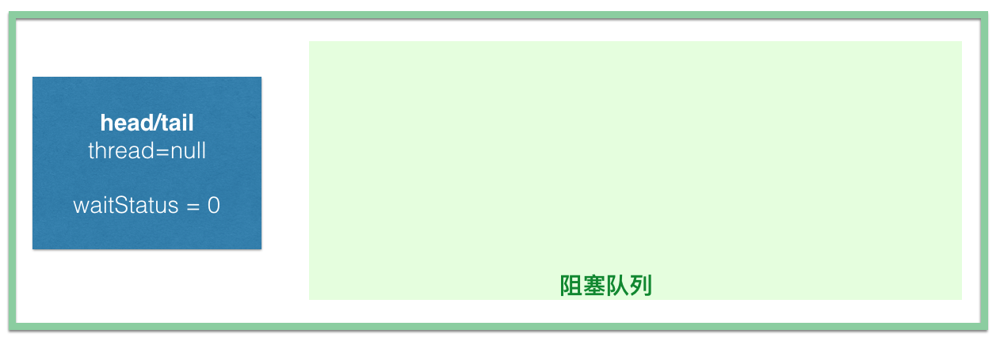
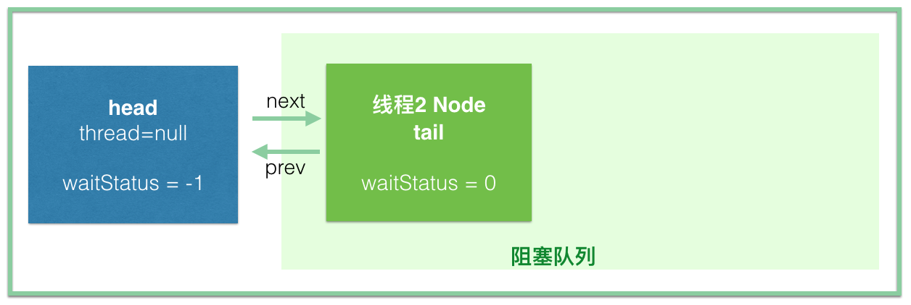
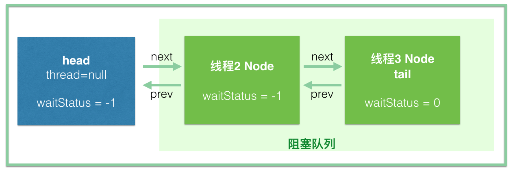

在分析 Java 并发包 java.util.concurrent 源码的时候，少不了需要了解 AbstractQueuedSynchronizer（以下简写AQS）这个抽象类，因为它是 Java 并发包的基础工具类，是实现 ReentrantLock、CountDownLatch、Semaphore、FutureTask 等类的基础。
Google 一下 AbstractQueuedSynchronizer，我们可以找到很多关于 AQS 的介绍，但是很多都没有介绍清楚，因为大部分文章没有把其中的一些关键的细节说清楚。
本文将从 ReentrantLock 的公平锁源码出发，分析下 AbstractQueuedSynchronizer 这个类是怎么工作的，希望能给大家提供一些简单的帮助。
申明以下几点：
- 本文有点长，但是很简单很简单很简单，主要面向读者对象为并发编程的初学者，或者想要阅读java并发包源码的开发者。
- 建议在电脑上阅读，如果你想好好地理解所有的细节，而且你从来没看过相关的分析，你可能至少需要 20 分钟仔细看所有的描述，本文后面的 1/3 以上很简单，前面的 1/4 更简单，中间的部分要好好看。
- 如果你不知道为什么要看这个，我想告诉你，即使你看懂了所有的细节，你可能也不能把你的业务代码写得更好
- 源码环境 JDK1.7，看到不懂或有疑惑的部分，最好能自己打开源码看看。Doug Lea 大神的代码写得真心不错。
- 有很多英文注释我没有删除，这样读者可以参考着英文说的来，万一被我忽悠了呢
- 本文不分析共享模式，这样可以给读者减少很多负担，只要把独占模式看懂，共享模式读者应该就可以顺着代码看懂了。而且也不分析 condition 部分，所以应该说很容易就可以看懂了。
- 本文大量使用我们平时用得最多的 ReentrantLock 的概念，本质上来说是不正确的，读者应该清楚，AQS 不仅仅用来实现锁，只是希望读者可以用锁来联想 AQS 的使用场景，降低读者的阅读压力
- ReentrantLock 的公平锁和非公平锁只有一点点区别，没有任何阅读压力
- 你需要提前知道什么是 CAS(CompareAndSet)
废话结束，开始。
AQS 结构
先来看看 AQS 有哪些属性，搞清楚这些基本就知道 AQS 是什么套路了，毕竟可以猜嘛！
// 头结点，你直接把它当做 当前持有锁的线程 可能是最好理解的
private transient volatile Node head;
// 阻塞的尾节点，每个新的节点进来，都插入到最后，也就形成了一个隐视的链表
private transient volatile Node tail;
// 这个是最重要的，不过也是最简单的，代表当前锁的状态，0代表没有被占用，大于0代表有线程持有当前锁
// 之所以说大于0，而不是等于1，是因为锁可以重入嘛，每次重入都加上1
private volatile int state;
// 代表当前持有独占锁的线程，举个最重要的使用例子，因为锁可以重入
// reentrantLock.lock()可以嵌套调用多次，所以每次用这个来判断当前线程是否已经拥有了锁
// if (currentThread == getExclusiveOwnerThread()) {state++}
private transient Thread exclusiveOwnerThread; //继承自AbstractOwnableSynchronizer
怎么样，看样子应该是很简单的吧，毕竟也就四个属性啊。
AbstractQueuedSynchronizer 的等待队列示意如下所示，注意了，之后分析过程中所说的 queue，也就是阻塞队列不包含 head，不包含 head，不包含 head。

等待队列中每个线程被包装成一个 node，数据结构是链表，一起看看源码吧：
static final class Node {
/** Marker to indicate a node is waiting in shared mode */
// 标识节点当前在共享模式下
static final Node SHARED = new Node();
/** Marker to indicate a node is waiting in exclusive mode */
// 标识节点当前在独占模式下
static final Node EXCLUSIVE = null;
// ======== 下面的几个int常量是给waitStatus用的 ===========
/** waitStatus value to indicate thread has cancelled */
// 代码此线程取消了争抢这个锁
static final int CANCELLED = 1;
/** waitStatus value to indicate successor's thread needs unparking */
// 官方的描述是，其表示当前node的后继节点对应的线程需要被唤醒
static final int SIGNAL = -1;
/** waitStatus value to indicate thread is waiting on condition */
// 本文不分析condition，所以略过吧，下一篇文章会介绍这个
static final int CONDITION = -2;
/**
* waitStatus value to indicate the next acquireShared should
* unconditionally propagate
*/
// 同样的不分析，略过吧
static final int PROPAGATE = -3;
// =====================================================
// 取值为上面的1、-1、-2、-3，或者0(以后会讲到)
// 这么理解，暂时只需要知道如果这个值 大于0 代表此线程取消了等待，
// 也许就是说半天抢不到锁，不抢了，ReentrantLock是可以指定timeouot的。。。
volatile int waitStatus;
// 前驱节点的引用
volatile Node prev;
// 后继节点的引用
volatile Node next;
// 这个就是线程本尊
volatile Thread thread;
}
Node 的数据结构其实也挺简单的，就是 thread + waitStatus + pre + next 四个属性而已，大家先要有这个概念在心里。
上面的是基础知识，后面会多次用到，心里要时刻记着它们，心里想着这个结构图就可以了。下面，我们开始说 ReentrantLock 的公平锁。多嘴一下，我说的阻塞队列不包含 head 节点。
首先，我们先看下 ReentrantLock 的使用方式。
// 我用个web开发中的service概念吧
public class OrderService {
// 使用static，这样每个线程拿到的是同一把锁，当然，spring mvc中service默认就是单例，别纠结这个
private static ReentrantLock reentrantLock = new ReentrantLock(true);
public void createOrder() {
// 比如我们同一时间，只允许一个线程创建订单
reentrantLock.lock();
// 通常，lock 之后紧跟着 try 语句
try {
// 这块代码同一时间只能有一个线程进来(获取到锁的线程)，
// 其他的线程在lock()方法上阻塞，等待获取到锁，再进来
// 执行代码...
// 执行代码...
// 执行代码...
} finally {
// 释放锁
reentrantLock.unlock();
}
}
}
ReentrantLock 在内部用了内部类 Sync 来管理锁，所以真正的获取锁和释放锁是由 Sync 的实现类来控制的。
abstract static class Sync extends AbstractQueuedSynchronizer {
}
Sync 有两个实现，分别为 NonfairSync（非公平锁）和 FairSync（公平锁），我们看 FairSync 部分。
public ReentrantLock(boolean fair) {
sync = fair ? new FairSync() : new NonfairSync();
}
线程抢锁
很多人肯定开始嫌弃上面废话太多了，下面跟着代码走，我就不废话了。
static final class FairSync extends Sync {
private static final long serialVersionUID = -3000897897090466540L;
// 争锁
final void lock() {
acquire(1);
}
// 来自父类AQS，我直接贴过来这边，下面分析的时候同样会这样做，不会给读者带来阅读压力
// 我们看到，这个方法，如果tryAcquire(arg) 返回true, 也就结束了。
// 否则，acquireQueued方法会将线程压到队列中
public final void acquire(int arg) { // 此时 arg == 1
// 首先调用tryAcquire(1)一下，名字上就知道，这个只是试一试
// 因为有可能直接就成功了呢，也就不需要进队列排队了，
// 对于公平锁的语义就是：本来就没人持有锁，根本没必要进队列等待(又是挂起，又是等待被唤醒的)
if (!tryAcquire(arg) &&
// tryAcquire(arg)没有成功，这个时候需要把当前线程挂起，放到阻塞队列中。
acquireQueued(addWaiter(Node.EXCLUSIVE), arg)) {
selfInterrupt();
}
}
/**
* Fair version of tryAcquire. Don't grant access unless
* recursive call or no waiters or is first.
*/
// 尝试直接获取锁，返回值是boolean，代表是否获取到锁
// 返回true：1.没有线程在等待锁；2.重入锁，线程本来就持有锁，也就可以理所当然可以直接获取
protected final boolean tryAcquire(int acquires) {
final Thread current = Thread.currentThread();
int c = getState();
// state == 0 此时此刻没有线程持有锁
if (c == 0) {
// 虽然此时此刻锁是可以用的，但是这是公平锁，既然是公平，就得讲究先来后到，
// 看看有没有别人在队列中等了半天了
if (!hasQueuedPredecessors() &&
// 如果没有线程在等待，那就用CAS尝试一下，成功了就获取到锁了，
// 不成功的话，只能说明一个问题，就在刚刚几乎同一时刻有个线程抢先了 =_=
// 因为刚刚还没人的，我判断过了???
compareAndSetState(0, acquires)) {
// 到这里就是获取到锁了，标记一下，告诉大家，现在是我占用了锁
setExclusiveOwnerThread(current);
return true;
}
}
// 会进入这个else if分支，说明是重入了，需要操作：state=state+1
else if (current == getExclusiveOwnerThread()) {
int nextc = c + acquires;
if (nextc < 0)
throw new Error("Maximum lock count exceeded");
setState(nextc);
return true;
}
// 如果到这里，说明前面的if和else if都没有返回true，说明没有获取到锁
// 回到上面一个外层调用方法继续看:
// if (!tryAcquire(arg)
// && acquireQueued(addWaiter(Node.EXCLUSIVE), arg))
// selfInterrupt();
return false;
}
// 假设tryAcquire(arg) 返回false，那么代码将执行：
// acquireQueued(addWaiter(Node.EXCLUSIVE), arg)，
// 这个方法，首先需要执行：addWaiter(Node.EXCLUSIVE)
/**
* Creates and enqueues node for current thread and given mode.
*
* @param mode Node.EXCLUSIVE for exclusive, Node.SHARED for shared
* @return the new node
*/
// 此方法的作用是把线程包装成node，同时进入到队列中
// 参数mode此时是Node.EXCLUSIVE，代表独占模式
private Node addWaiter(Node mode) {
Node node = new Node(Thread.currentThread(), mode);
// Try the fast path of enq; backup to full enq on failure
// 以下几行代码想把当前node加到链表的最后面去，也就是进到阻塞队列的最后
Node pred = tail;
// tail!=null => 队列不为空(tail==head的时候，其实队列是空的，不过不管这个吧)
if (pred != null) {
// 设置自己的前驱 为当前的队尾节点
node.prev = pred;
// 用CAS把自己设置为队尾, 如果成功后，tail == node了
if (compareAndSetTail(pred, node)) {
// 进到这里说明设置成功，当前node==tail, 将自己与之前的队尾相连，
// 上面已经有 node.prev = pred
// 加上下面这句，也就实现了和之前的尾节点双向连接了
pred.next = node;
// 线程入队了，可以返回了
return node;
}
}
// 仔细看看上面的代码，如果会到这里，
// 说明 pred==null(队列是空的) 或者 CAS失败(有线程在竞争入队)
// 读者一定要跟上思路，如果没有跟上，建议先不要往下读了，往回仔细看，否则会浪费时间的
enq(node);
return node;
}
/**
* Inserts node into queue, initializing if necessary. See picture above.
* @param node the node to insert
* @return node's predecessor
*/
// 采用自旋的方式入队
// 之前说过，到这个方法只有两种可能：等待队列为空，或者有线程竞争入队，
// 自旋在这边的语义是：CAS设置tail过程中，竞争一次竞争不到，我就多次竞争，总会排到的
private Node enq(final Node node) {
for (;;) {
Node t = tail;
// 之前说过，队列为空也会进来这里
if (t == null) { // Must initialize
// 初始化head节点
// 细心的读者会知道原来head和tail初始化的时候都是null，反正我不细心
// 还是一步CAS，你懂的，现在可能是很多线程同时进来呢
if (compareAndSetHead(new Node()))
// 给后面用：这个时候head节点的waitStatus==0, 看new Node()构造方法就知道了
// 这个时候有了head，但是tail还是null，设置一下，
// 把tail指向head，放心，马上就有线程要来了，到时候tail就要被抢了
// 注意：这里只是设置了tail=head，这里可没return哦，没有return，没有return
// 所以，设置完了以后，继续for循环，下次就到下面的else分支了
tail = head;
} else {
// 下面几行，和上一个方法 addWaiter 是一样的，
// 只是这个套在无限循环里，反正就是将当前线程排到队尾，有线程竞争的话排不上重复排
node.prev = t;
if (compareAndSetTail(t, node)) {
t.next = node;
return t;
}
}
}
}
// 现在，又回到这段代码了
// if (!tryAcquire(arg)
// && acquireQueued(addWaiter(Node.EXCLUSIVE), arg))
// selfInterrupt();
// 下面这个方法，参数node，经过addWaiter(Node.EXCLUSIVE)，此时已经进入阻塞队列
// 注意一下：如果acquireQueued(addWaiter(Node.EXCLUSIVE), arg))返回true的话，
// 意味着上面这段代码将进入selfInterrupt()，所以正常情况下，下面应该返回false
// 这个方法非常重要，应该说真正的线程挂起，然后被唤醒后去获取锁，都在这个方法里了
final boolean acquireQueued(final Node node, int arg) {
boolean failed = true;
try {
boolean interrupted = false;
for (;;) {
final Node p = node.predecessor();
// p == head 说明当前节点虽然进到了阻塞队列，但是是阻塞队列的第一个，因为它的前驱是head
// 注意，阻塞队列不包含head节点，head一般指的是占有锁的线程，head后面的才称为阻塞队列
// 所以当前节点可以去试抢一下锁
// 这里我们说一下，为什么可以去试试：
// 首先，它是队头，这个是第一个条件，其次，当前的head有可能是刚刚初始化的node，
// enq(node) 方法里面有提到，head是延时初始化的，而且new Node()的时候没有设置任何线程
// 也就是说，当前的head不属于任何一个线程，所以作为队头，可以去试一试，
// tryAcquire已经分析过了, 忘记了请往前看一下，就是简单用CAS试操作一下state
if (p == head && tryAcquire(arg)) {
setHead(node);
p.next = null; // help GC
failed = false;
return interrupted;
}
// 到这里，说明上面的if分支没有成功，要么当前node本来就不是队头，
// 要么就是tryAcquire(arg)没有抢赢别人，继续往下看
if (shouldParkAfterFailedAcquire(p, node) &&
parkAndCheckInterrupt())
interrupted = true;
}
} finally {
if (failed)
cancelAcquire(node);
}
}
/**
* Checks and updates status for a node that failed to acquire.
* Returns true if thread should block. This is the main signal
* control in all acquire loops. Requires that pred == node.prev
*
* @param pred node's predecessor holding status
* @param node the node
* @return {@code true} if thread should block
*/
// 刚刚说过，会到这里就是没有抢到锁呗，这个方法说的是："当前线程没有抢到锁，是否需要挂起当前线程？"
// 第一个参数是前驱节点，第二个参数才是代表当前线程的节点
private static boolean shouldParkAfterFailedAcquire(Node pred, Node node) {
int ws = pred.waitStatus;
// 前驱节点的 waitStatus == -1 ，说明前驱节点状态正常，当前线程需要挂起，直接可以返回true
if (ws == Node.SIGNAL)
/*
* This node has already set status asking a release
* to signal it, so it can safely park.
*/
return true;
// 前驱节点 waitStatus大于0 ，之前说过，大于0 说明前驱节点取消了排队。这里需要知道这点：
// 进入阻塞队列排队的线程会被挂起，而唤醒的操作是由前驱节点完成的。
// 所以下面这块代码说的是将当前节点的prev指向waitStatus<=0的节点，
// 简单说，就是为了找个好爹，因为你还得依赖它来唤醒呢，如果前驱节点取消了排队，
// 找前驱节点的前驱节点做爹，往前循环总能找到一个好爹的
if (ws > 0) {
/*
* Predecessor was cancelled. Skip over predecessors and
* indicate retry.
*/
do {
node.prev = pred = pred.prev;
} while (pred.waitStatus > 0);
pred.next = node;
} else {
/*
* waitStatus must be 0 or PROPAGATE. Indicate that we
* need a signal, but don't park yet. Caller will need to
* retry to make sure it cannot acquire before parking.
*/
// 仔细想想，如果进入到这个分支意味着什么
// 前驱节点的waitStatus不等于-1和1，那也就是只可能是0，-2，-3
// 在我们前面的源码中，都没有看到有设置waitStatus的，所以每个新的node入队时，waitStatu都是0
// 用CAS将前驱节点的waitStatus设置为Node.SIGNAL(也就是-1)
compareAndSetWaitStatus(pred, ws, Node.SIGNAL);
}
return false;
}
// private static boolean shouldParkAfterFailedAcquire(Node pred, Node node)
// 这个方法结束根据返回值我们简单分析下：
// 如果返回true, 说明前驱节点的waitStatus==-1，是正常情况，那么当前线程需要被挂起，等待以后被唤醒
// 我们也说过，以后是被前驱节点唤醒，就等着前驱节点拿到锁，然后释放锁的时候叫你好了
// 如果返回false, 说明当前不需要被挂起，为什么呢？往后看
// 跳回到前面是这个方法
// if (shouldParkAfterFailedAcquire(p, node) &&
// parkAndCheckInterrupt())
// interrupted = true;
// 1. 如果shouldParkAfterFailedAcquire(p, node)返回true，
// 那么需要执行parkAndCheckInterrupt():
// 这个方法很简单，因为前面返回true，所以需要挂起线程，这个方法就是负责挂起线程的
// 这里用了LockSupport.park(this)来挂起线程，然后就停在这里了，等待被唤醒=======
private final boolean parkAndCheckInterrupt() {
LockSupport.park(this);
return Thread.interrupted();
}
// 2. 接下来说说如果shouldParkAfterFailedAcquire(p, node)返回false的情况
// 仔细看shouldParkAfterFailedAcquire(p, node)，我们可以发现，其实第一次进来的时候，一般都不会返回true的，原因很简单，前驱节点的waitStatus=-1是依赖于后继节点设置的。也就是说，我都还没给前驱设置-1呢，怎么可能是true呢，但是要看到，这个方法是套在循环里的，所以第二次进来的时候状态就是-1了。
// 解释下为什么shouldParkAfterFailedAcquire(p, node)返回false的时候不直接挂起线程：
// => 是为了应对在经过这个方法后，node已经是head的直接后继节点了。剩下的读者自己想想吧。
}
说到这里，也就明白了，多看几遍 final boolean acquireQueued(final Node node, int arg) 这个方法吧。自己推演下各个分支怎么走，哪种情况下会发生什么，走到哪里。
解锁操作
最后，就是还需要介绍下唤醒的动作了。我们知道，正常情况下，如果线程没获取到锁，线程会被 LockSupport.park(this); 挂起停止，等待被唤醒。
// 唤醒的代码还是比较简单的，你如果上面加锁的都看懂了，下面都不需要看就知道怎么回事了
public void unlock() {
sync.release(1);
}
public final boolean release(int arg) {
// 往后看吧
if (tryRelease(arg)) {
Node h = head;
if (h != null && h.waitStatus != 0)
unparkSuccessor(h);
return true;
}
return false;
}
// 回到ReentrantLock看tryRelease方法
protected final boolean tryRelease(int releases) {
int c = getState() - releases;
if (Thread.currentThread() != getExclusiveOwnerThread())
throw new IllegalMonitorStateException();
// 是否完全释放锁
boolean free = false;
// 其实就是重入的问题，如果c==0，也就是说没有嵌套锁了，可以释放了，否则还不能释放掉
if (c == 0) {
free = true;
setExclusiveOwnerThread(null);
}
setState(c);
return free;
}
/**
* Wakes up node's successor, if one exists.
*
* @param node the node
*/
// 唤醒后继节点
// 从上面调用处知道，参数node是head头结点
private void unparkSuccessor(Node node) {
/*
* If status is negative (i.e., possibly needing signal) try
* to clear in anticipation of signalling. It is OK if this
* fails or if status is changed by waiting thread.
*/
int ws = node.waitStatus;
// 如果head节点当前waitStatus<0, 将其修改为0
if (ws < 0)
compareAndSetWaitStatus(node, ws, 0);
/*
* Thread to unpark is held in successor, which is normally
* just the next node. But if cancelled or apparently null,
* traverse backwards from tail to find the actual
* non-cancelled successor.
*/
// 下面的代码就是唤醒后继节点，但是有可能后继节点取消了等待（waitStatus==1）
// 从队尾往前找，找到waitStatus<=0的所有节点中排在最前面的
Node s = node.next;
if (s == null || s.waitStatus > 0) {
s = null;
// 从后往前找，仔细看代码，不必担心中间有节点取消(waitStatus==1)的情况
for (Node t = tail; t != null && t != node; t = t.prev)
if (t.waitStatus <= 0)
s = t;
}
if (s != null)
// 唤醒线程
LockSupport.unpark(s.thread);
}
唤醒线程以后，被唤醒的线程将从以下代码中继续往前走：
private final boolean parkAndCheckInterrupt() {
LockSupport.park(this); // 刚刚线程被挂起在这里了
return Thread.interrupted();
}
// 又回到这个方法了：acquireQueued(final Node node, int arg)，这个时候，node的前驱是head了
好了，后面就不分析源码了，剩下的还有问题自己去仔细看看代码吧。
总结
总结一下吧。
在并发环境下，加锁和解锁需要以下三个部件的协调：
- 锁状态。我们要知道锁是不是被别的线程占有了，这个就是 state 的作用，它为 0 的时候代表没有线程占有锁，可以去争抢这个锁，用 CAS 将 state 设为 1，如果 CAS 成功，说明抢到了锁，这样其他线程就抢不到了，如果锁重入的话，state进行+1 就可以，解锁就是减 1，直到 state 又变为 0，代表释放锁，所以 lock() 和 unlock() 必须要配对啊。然后唤醒等待队列中的第一个线程，让其来占有锁。
- 线程的阻塞和解除阻塞。AQS 中采用了 LockSupport.park(thread) 来挂起线程，用 unpark 来唤醒线程。
- 阻塞队列。因为争抢锁的线程可能很多，但是只能有一个线程拿到锁，其他的线程都必须等待，这个时候就需要一个 queue 来管理这些线程，AQS 用的是一个 FIFO 的队列，就是一个链表，每个 node 都持有后继节点的引用。AQS 采用了 CLH 锁的变体来实现，感兴趣的读者可以参考这篇文章关于CLH的介绍，写得简单明了。
示例图解析
下面属于回顾环节，用简单的示例来说一遍，如果上面的有些东西没看懂，这里还有一次帮助你理解的机会。
首先，第一个线程调用 reentrantLock.lock()，翻到最前面可以发现，tryAcquire(1) 直接就返回 true 了，结束。只是设置了 state=1，连 head 都没有初始化，更谈不上什么阻塞队列了。要是线程 1 调用 unlock() 了，才有线程 2 来，那世界就太太太平了，完全没有交集嘛，那我还要 AQS 干嘛。
如果线程 1 没有调用 unlock() 之前，线程 2 调用了 lock(), 想想会发生什么？
线程 2 会初始化 head【new Node()】，同时线程 2 也会插入到阻塞队列并挂起 (注意看这里是一个 for 循环，而且设置 head 和 tail 的部分是不 return 的，只有入队成功才会跳出循环)
private Node enq(final Node node) {
for (;;) {
Node t = tail;
if (t == null) { // Must initialize
if (compareAndSetHead(new Node()))
tail = head;
} else {
node.prev = t;
if (compareAndSetTail(t, node)) {
t.next = node;
return t;
}
}
}
}
首先，是线程 2 初始化 head 节点，此时 head==tail, waitStatus==0

然后线程 2 入队：

同时我们也要看此时节点的 waitStatus，我们知道 head 节点是线程 2 初始化的，此时的 waitStatus 没有设置， java 默认会设置为 0，但是到 shouldParkAfterFailedAcquire 这个方法的时候，线程 2 会把前驱节点，也就是 head 的waitStatus设置为-1。
那线程 2 节点此时的 waitStatus 是多少呢，由于没有设置，所以是 0；
如果线程3此时再进来，直接插到线程2的后面就可以了，此时线程 3 的 waitStatus 是 0，到 shouldParkAfterFailedAcquire 方法的时候把前驱节点线程 2 的 waitStatus 设置为 -1。

这里可以简单说下 waitStatus 中 SIGNAL(-1) 状态的意思，Doug Lea 注释的是：代表后继节点需要被唤醒。也就是说这个 waitStatus 其实代表的不是自己的状态，而是后继节点的状态，我们知道，每个 node 在入队的时候，都会把前驱节点的状态改为 SIGNAL，然后阻塞，等待被前驱唤醒。这里涉及的是两个问题：有线程取消了排队、唤醒操作。其实本质是一样的，读者也可以顺着 “waitStatus代表后继节点的状态” 这种思路去看一遍源码。
（全文完）
徐涛 2017-11-15 20:42
大神，这里的理解是不是有点问题。 if (p == head && tryAcquire(arg)) { setHead(node); p.next = null; // help GC failed = false; return interrupted; } 这里保留head为刚开始的new Node()不好吗？为什么要重新设置一下head呢？
回复
HongJie 2017-11-16 10:04
我稍微美化一下：
final Node p = node.predecessor(); if (p == head && tryAcquire(arg)) { setHead(node); p.next = null; // help GC failed = false; return interrupted; }这里保留head为刚开始的new Node()不好吗？为什么要重新设置一下head呢？
回复
HongJie 2017-11-16 10:07
假设不调用 setHead(node)，我们假设此时 A 持有这个锁，head 是 new Node() 那个空节点。
A 持有的锁用完了，释放锁，唤醒后继节点 B。后继节点 B 从 parkAndCheckInterrupt() 这个方法返回，注意这里的 for 循环。然后调用 final Node p = node.predecessor(); 这个方法，那么这个时候，p == head 就不成立了，也就进不到 tryAcquire(arg) 这里去获取锁。
for (;;) { final Node p = node.predecessor(); if (p == head && tryAcquire(arg)) { // 进到这里，说明获取到锁了 setHead(node); p.next = null; // help GC failed = false; return interrupted; } if (shouldParkAfterFailedAcquire(p, node) && parkAndCheckInterrupt()) interrupted = true; }回复
HongJie 2017-11-16 10:12
另一处。既然当前线程获取到了锁，它就不应该再是阻塞队列的一员。如果没有 setHead 这一步，下面这个方法就不准确了：
public final Collection<Thread> getQueuedThreads() { ArrayList<Thread> list = new ArrayList<Thread>(); for (Node p = tail; p != null; p = p.prev) { Thread t = p.thread; if (t != null) // 注意这里 list.add(t); } return list; }回复
徐涛 2017-11-16 11:24
谢谢！ 另外我感觉AQS里面的waitStatus不是很好理解，有时候-1代表后续节点是不是需要unpark，1又代表自己是被cancel掉。有时候代表别人的状态，有时候代表自己的状态。 都用waitStatus表示自己的状态不好吗？
回复
spjich 2017-11-30 17:19
boolean failed = true; try { boolean interrupted = false; for (;;) { final Node p = node.predecessor(); if (p == head && tryAcquire(arg)) { setHead(node); p.next = null; // help GC failed = false; return interrupted; } if (shouldParkAfterFailedAcquire(p, node) && parkAndCheckInterrupt()) interrupted = true; } } finally { if (failed) cancelAcquire(node); }第一个问题：这个finally里的cancelAcquire 似乎永远都不会被执行吧 第二个问题：为什么都是要从tail往前找第一个状态是非CANCEL的节点呢，如果从head往后找第一个状态是非CANCEL的话效率会不会高一点
回复
HongJie 2017-12-07 14:40
非常抱歉这么久才回复你。你看文章看得很仔细?。
第一个问题：这里的 failed 确实永远都不会为 true，cancelAcquire() 永远不会得到执行。那为什么要这么写呢，如果你看了后面的两篇，可能会有些体会，这部分其实是用于响应中断或超时的，你可以参考
doAcquireNanos(int arg, long nanosTimeout)或doAcquireInterruptibly(int arg)。在这个方法中确实是没用的，这更像是模板代码吧。回复
HongJie 2017-12-07 14:40
第二个问题：你应该说的是
unparkSuccessor(Node node)这个方法吧。Node s = node.next; if (s == null || s.waitStatus > 0) { s = null; for (Node t = tail; t != null && t != node; t = t.prev) if (t.waitStatus <= 0) s = t; } if (s != null) LockSupport.unpark(s.thread);首先，第一行代码先检测 head 的后继节点，只有当此时的后继节点不存在或者这个后继节点取消了才开始从后往前找，所以大部分情况下，其实不会发生从后往前遍历整个队列的情况。（后继节点取消很正常，但是某节点在入队的时候，如果发现前驱是取消状态，前驱节点是会被请出队列的）
你说的这个问题的答案在
addWaiter(Node mode)方法中，看下面的代码：Node pred = tail; if (pred != null) { node.prev = pred; // 1. 先设置的 tail if (compareAndSetTail(pred, node)) { // 2. 设置前驱节点的后继节点为当前节点 pred.next = node; return node; } }所以，这里存在并发问题：从前往后寻找不一定能找到刚刚加入队列的后继节点。
回复
spjich 2017-12-07 15:13
恩是的，确实如此，源码作者如此设计，巧妙的解决了并发问题。因为先node.prev = pred; 再compareAndSetTail(pred, node) 再 pred.next = node; 这种操作步奏 是安全的，以此为前提，如果从前往后找的话 compareAndSetTail(pred, node) 如果执行完成而pred.next = node; 还未来的及执行的话 新加的tail是无法被遍历到的。多谢作者指点
回复
李晓东 2018-02-23 18:03
把addWaiter（mode）的返回值误认为就是enq(node)得返回值，看得我怀疑人生。老板你写的这么风趣、细致、还那么贴心实在是太nice了，非常感谢
回复
xupeng.zhang 2018-02-23 20:18
看了一遍又一遍，一边看文章，一边回过头看代码，一边推演整个流程的模型。总算看懂了。
回复
hello2333 2018-02-26 12:31
感觉Java的monitor和AQS的目的和实现思路很相似，为什么还要再实现一遍AQS呢？
回复
HongJie 2018-02-26 14:11
monitor 功能太单一了，就是获取独占锁，
AQS 相比 monitor，功能要丰富很多，比如我们可以设置超时时间，可以用线程中断进行退出，可以选择公平/非公平模式等，你可以先看看后面关于 AQS 介绍的第二篇和第三篇，然后就会发现，采用 AQS 可以实现很多灵活的场景
回复
冯健 2018-03-03 22:12
大神，有一个地方还是没搞懂。 acquireQueued方法里面，第一次调用shouldParkAfterFailedAcquire(p, node)的时候，把前驱节点waitStatus从0改为-1，然后返回false，回到acquireQueued方法，再尝试拿一次锁，然后第二次调用shouldParkAfterFailedAcquire返回true，调用parkAndCheckInterrupt()挂起线程。 那么，如果在某线程B还没有挂起之前，前驱节点的线程A发现自己waitStatus为-1直接unpark，然后刚刚的线程B才挂起。那不就没人能唤醒它了吗？它是怎么保证被唤醒的？
回复
HongJie 2018-03-05 10:05
非常抱歉，这次的回复很不及时~
你应该已经把流程摸清楚了，我就说一点就可以了，你的疑问其实在 unpark() 方法上。
1、如果一个线程 park 了，那么调用 unpark(thread) 这个线程会被唤醒；
2、如果一个线程先被调用了 unpark，那么下一个 park(thread) 操作不会挂起线程。
回复
冯健 2018-03-05 10:51
原来是这样，那就没有问题了。 十分感谢，回复非常快。
回复
hello2333 2018-03-06 19:07
假设t1时刻A线程执行addWaiter，在队尾加入了一个新的nodeA，执行结束； t2时刻，B线程执行unparkSuccessor，在for循环中突然被线程C打断； 线程C程执行addWaiter，在队尾加入了一个新的nodeC，执行结束； 再回到线程B，此时线程B仍然无法访问到节点nodeC是吧？
回复
HongJie 2018-03-06 19:14
我表示没有理解你的意思?
第二句话稍微再具体一点点
回复
你猜 2018-03-09 11:49
你是廖红杰吗
回复
你猜 2018-03-09 11:50
打错字了，廖鸿杰
回复
HongJie 2018-03-09 12:51
你猜?
回复
余谦 2018-03-14 16:20
公平锁对于已经在队列里面的线程其实是不公平的，已经在队列中的线程只能顺序获得锁，是吗？
回复
HongJie 2018-03-14 16:24
你说的这个问题很简单，建议你看下下一篇文章，开头第一小节解释了公平锁和非公平锁的区别。
回复
L 2018-03-23 19:50
public final boolean hasQueuedPredecessors() { // The correctness of this depends on head being initialized // before tail and on head.next being accurate if the current // thread is first in queue. Node t = tail; // Read fields in reverse initialization order Node h = head; Node s; return h != t && ((s = h.next) == null || s.thread != Thread.currentThread()); } 请教大神，为什么要先读tail，再读head，我猜是为了增加tail为null的可能性，可是增加这种可能性的目的呢？
回复
HongJie 2018-03-26 18:19
非常抱歉，周末的留言一般我很难及时回复，然后就只能等工作日想起来的时候回复了?
你这个问题可真是细啊，细心的程序员~~~
我把评论限制了 1024 个字符，所以分两条了。。。
看下面这段代码，如果是第一个 node 进队列的情况：
private Node enq(final Node node) { for (;;) { Node t = tail; if (t == null) { // 1. 设置 head if (compareAndSetHead(new Node())) // 2. 设置 tail tail = head; } else { node.prev = t; if (compareAndSetTail(t, node)) { t.next = node; return t; } } } }也就是说，先有 head 然后才有 tail。
回复
HongJie 2018-03-26 18:19
回到 hasQueuedPredecessors：
public final boolean hasQueuedPredecessors() { Node t = tail; Node h = head; Node s; return h != t && ((s = h.next) == null || s.thread != Thread.currentThread()); }有可能的情况就是 t 为 null，h 不为 null 对吧，这个时候返回值取决于 h.next。
如果调换一下
Node t = tail;和Node h = head;那么可能出现 h 为 null，t 不为 null，这个方法会返回 false。但是其实不对的，很可能这个间隙是有节点 enq 成功的。
回复
袋鼠 2018-04-01 12:38
看了评论区，关于unparkSuccessor(Node node)方法中从后往前找的描述，我了解了从后往前找的原因，但是还有个疑问想请教。
我们不应该从前往后找吗？这样，先入列的，等待之后，先获得锁吗？
回复
袋鼠 2018-04-01 23:01
我问的这个问题，我再看看，自己再思考一下！！！ 先谢过。
回复
HongJie 2018-04-02 11:07
非常抱歉哈，一般周末留言的问题我确实经常不能很及时回复。
Node s = node.next; if (s == null || s.waitStatus > 0) { s = null; for (Node t = tail; t != null && t != node; t = t.prev) if (t.waitStatus <= 0) s = t; } if (s != null) LockSupport.unpark(s.thread);这段代码不是说就是从后往前找，而是当 s.next “不正常” 的时候才是从后往前找，大概率情况下，还是不需要遍历的。
回复
袋鼠 2018-04-04 22:52
感谢回复，又看了几遍理解了，谢谢！
回复
袋鼠 2018-04-01 12:40
自己也是在一步步研究AQS，有些头大
回复
sky 2018-04-09 11:55
大神，为什么所说的阻塞队列不包含 head 节点
回复
HongJie 2018-04-09 12:40
因为 head 节点是当前独占锁的持有者。
回复
sky 2018-04-09 12:53
感谢，获益匪浅
回复
夏天 2018-04-09 20:39
我想问一下博主，为什么共享锁的node节点是new了一个节点，独占是null呢
回复
HongJie 2018-04-09 20:47
其实我也不知道是为什么???
大神 Doug Lea 的想法应该是(我怎么知道他到底怎么想的)：
nextWaiter这个属性在这个时候是没用的，因为它用来实现 Condition，那么不用白不用，虽然不好理解，可是充分利用资源呀，不然还得自己额外定义一个用来标识模式的属性。回复
sky 2018-04-09 22:19
public final void acquire(int arg) { if (!tryAcquire(arg) && acquireQueued(addWaiter(Node.EXCLUSIVE), arg)) selfInterrupt(); }
博主您好，请问这个里如果同步状态tryAcquire(arg)获取失败，就构造一个同步节点通过addWaiter(Node.EXCLUSIVE)将节点添加到尾部，如果条件成立执行 selfInterrupt()会中断当前线程吗 selfInterrupt()的用途不是太明白，有的书籍上说acquire(int arg)方法对中断不敏感，不会将获取同步状态失败的线程从同步队列中移除。烦请博主大大给点指点下哈
回复
HongJie 2018-04-09 22:27
你说的这个很简单，acquireQueued 返回值代表的是：是否被中断过。但是，不管是否被中断过，acquireQueued 出来以后，线程的中断状态一定是 false，所以如果发生过中断，要重新设置中断状态。
虽然 acquire(int arg) 确实是不关心中断的，但是它会保持这个状态，如果客户端想要知道是否发生过中断的话，还是可以知道的。因为中断情况下，中断状态虽然中间丢过，但是 selfInterrupt() 会设置回去。
会实际受到中断影响的是另一个方法 acquireInterruptibly(int arg)，这个方法会通过抛出异常的方式告诉客户端。
回复
sky 2018-04-09 22:40
final Node predecessor() throws NullPointerException { Node p = prev; if (p == null) throw new NullPointerException(); else return p; }
// p == head 说明当前节点虽然进到了阻塞队列，但是是阻塞队列的第一个，因为它的前驱是head // 注意，阻塞队列不包含head节点，head一般指的是占有锁的线程，head后面的才称为阻塞队列 // 所以当前节点可以去试抢一下锁 // 这里我们说一下，为什么可以去试试： // 首先，它是队头，这个是第一个条件，其次，当前的head有可能是刚刚初始化的node， // enq(node) 方法里面有提到，head是延时初始化的，而且new Node()的时候没有设置任何线程 // 也就是说，当前的head不属于任何一个线程，所以作为队头，可以去试一试，
博主，如果是在enq(node)中new head的话，那说明只有head这一个节点把，也就没有前驱节点了，那么 Node p = prev; p就为null了把，就会直接抛异常了把
回复
HongJie 2018-04-09 22:47
下次评论的时候，记得要使用 markdown 语法，不然样式很难看。
你先认真看看吧，自己推导推导，还是挺有意思的，而且整个并发包源码很多地方都用了 AQS 框架。
回复
sky 2018-04-09 23:08
博主：if (shouldParkAfterFailedAcquire(p, node) && parkAndCheckInterrupt()) interrupted = true; 这里可以解释下吗？上面的没有看懂。。。
回复
HongJie 2018-04-09 23:13
三言两语还是比较难说清楚的。随便说几句不严谨的，具体的还是得仔细看每一行代码。
shouldParkAfterFailedAcquire：判断是否应该要挂起，如果需要，进到 parkAndCheckInterrupt 进行挂起，等待别人唤醒它。
。。。假设过了很久。。。被唤醒了，需要判断是否是被中断唤醒的还是前驱节点用完了锁正常唤醒自己的。
回复
sky 2018-04-09 23:18
好的?
回复
sky 2018-04-11 07:29
大神，为什么cancelAcquire方法中，要设置node.next = node呢
回复
石黑龙 2018-04-12 23:58
不是很明白head 节点是当前独占锁的持有者的意思(注释也说到head一般指的是占有锁的线程)，请问从何作出这个判断？ 看代码感觉整个阻塞队列（包括head节点）都没有当前占有锁线程的信息。
回复
HongJie 2018-04-13 00:06
这是隐含的信息，ReentrantLock 具有排他性，lock() 方法要么阻塞，要么顺利拿到锁返回。
当 lock() 返回的时候，我们说当前线程持有了独占锁，而此时的 head 就是当前线程。
（这里说的情况不考虑连 head 都没有初始化的场景）
回复
石黑龙 2018-04-13 09:45
这样的说法很容易让人混淆，应该是得分两种情况考虑:
1、当前已有别的线程持有锁的时候，head是指向(head.next)下次解锁时即将能持有锁的线程。
2、当持有锁的线程unlock时， head 指向的就是当前持有锁的线程 ，但这个时间非常短，因为head马上又会指向一下个即将能持有锁的线程。
回复
jacky 2018-04-23 17:44
你好，谢谢你的博客，有一点我想问一下
private void cancelAcquire(Node node) { ... // If we are the tail, remove ourselves. if (node == tail && compareAndSetTail(node, pred)) { compareAndSetNext(pred, predNext, null); } else { int ws; /* 这里为什么如果不满足条件就唤醒下一位 * 第一个条件我是理解的 如果pred是head 那么需要唤醒下一位 * 因为如果前面是pred ==head 那么这个cancel的线程定时醒来后 * 如果还没有执行赋值，那么此时持有锁的线程正好开始释放锁， * 那么会唤醒第一个阻塞的线程，假设这个线程正好是上面的线程 * 那么如果此时这个cancel的线程不传递这个唤醒，就会造成 * 其他线程醒不来， 但是为什么下面两个条件的失败也会唤醒后面的线程？ */ if (pred != head && ((ws = pred.waitStatus) == Node.SIGNAL || (ws <= 0 && compareAndSetWaitStatus(pred, ws, Node.SIGNAL))) && pred.thread != null) { ... }回复
HongJie 2018-04-23 19:00
转化一下，如果要进入到 else，需要满足：
(ws = pred.waitStatus) != Node.SIGNAL && ws > 0 || (ws <=0 && compareAndSetWaitStatus(pred, ws, Node.SIGNAL))再将其转化为下面两种情况：
(ws = pred.waitStatus != Node.SIGNAL) && ws > 0
前驱节点处于 CANCELLED 状态，显然是需要唤醒后继节点的，这条很简单
(ws = pred.waitStatus != Node.SIGNAL)
&& (ws <= 0)
&& (!compareAndSetWaitStatus(pred, ws, Node.SIGNAL))
这种情况下，在将前驱设置为 SIGNAL 的时候失败了，我想到的一种情况是，在 CAS 之前前驱设置为了 CANCELLED
回复
HongJie 2018-04-23 19:04
好像漏了一条: pred.thread == null
这个很简单，head 是 new Node() 的“空节点”，要是不做唤醒后继节点的话，那。。。你懂的
回复
jacky 2018-04-23 21:52
谢谢你的回复， (ws = pred.waitStatus != Node.SIGNAL) && ws > 0 前驱节点处于 CANCELLED 状态，显然是需要唤醒后继节点的，这条很简单 如果前驱是cancelled，为什么需要唤醒下一位？ 我的理解是，要激活下一位的原因，是怕把真正的激活用在了激活了cancel节点，造成后面的线程醒不了，所以需要激活下一位， 因为需要唤醒下一位，是怕下一位醒不来，如果前驱是cancelled，因为有第一条的限制，pred != head, 说明在上面Skip cancelled predecessors的时候，pred还不是cancel，如果在执行完这个之后，pred变为了cancel也没有关系，因为pred的醒来晚于当前，所以当前线程不可能浪费一次激活的机会，这个浪费跟我的第一条里面的方式一样(释放锁激活了一个cancel节点，如果激活不传递会有问题)，那么说明当前线程不可能是pred激活的，那么说明当前线程的唤醒根本不可能是pred唤醒的，也就是不会存在释放锁的线程激活第一个cancel节点，cancel节点激活当前这个节点
回复
jacky 2018-04-23 21:59
但是如果是这种情况，那么就会直接走pred == head 这个条件了，而不是走pred == null 这个条件, 所以如果走了这个pred.thread == null 这个条件，说明pred != head, 那么head 是 new Node() 的“空节点”就不成立了，不知是不是理解有误
回复
jacky 2018-04-23 22:37
我想说的是，这两个条件执行的前提也是head!=null 如果cancelAcquire一开始过滤cancel节点的时候，pred不是cancel，那么在底下的时候，如果pred的状态变为了cancel，那么已经说明当前线程不可能是pred唤醒的，因为pred醒来的时候，当前线程早已经醒了，所以不会是pred，还有会存在唤醒的可能是，正常释放锁的时候，会唤醒头节点，那么头节点如果是cancel，然后cancel有可能继续在接下来cancel节点醒来的时候，去唤醒他一次，但是如果是这种情况，那么第二个节点在过滤cancel的时候，会过滤掉第一个节点，结果pred变为了head，这样又是不满足第一个条件 pred == head,而不是底下的判断条件
回复
HongJie 2018-04-26 21:14
这两天实在是忙得很。。。
这里我应该是犯了低级错误，此时的情况不可能是 new Node() 的节点，我想应该是前驱调用了 cancelAcquire 方法置 null 了。
上面一条的评论我就先不回复你了，我也有些没完全看懂，改天我看懂了再回复吧。
如果你看懂了，希望你能分享给我 ???
回复
jacky 2018-05-04 14:37
ok，一起交流，最近没有深入下去，现在还是没有完全get到这三个条件的点
回复
lzf8888 2018-05-11 17:07
首先，文章写得非常好，代码真是非常的精妙。 JVM的monitor最终是使用了（如果升级为重量锁）mutex，操作系统级的支持；能否这样理解，基于AQS的ReentrantLock不需要操作系统的锁支持了，所以比较轻？而且也不会升级为重量级锁，本身只是个等待队列而已。
回复
Alan 2018-05-17 16:03
do { node.prev = pred = pred.prev; } while (pred.waitStatus > 0); pred.next = node;这一块会不会发生pred对象为null呢？？？？
回复
kaka 2018-05-22 11:13
public final boolean hasQueuedPredecessors() { Node t = tail; // Read fields in reverse initialization order Node h = head; Node s; return h != t && ( (s = h.next) == null || s.thread != Thread.currentThread() ); }1队列非空，2队列第一个节点（非head）非当前线程 满足两个条件返回true， 那么h != t && (s = h.next) == null 这样一种场景怎么理解
回复
HongJie 2018-05-26 00:48
不好意思哈，最近太忙了，都没空回复你们的问题，看来我真不是一个合格的博主。
你的问题需要到 enq 找答案：
private Node enq(final Node node) { for (;;) { Node t = tail; if (t == null) { if (compareAndSetHead(new Node())) tail = head; } else { node.prev = t; if (compareAndSetTail(t, node)) { // 看这里 t.next = node; return t; } } } }节点入队时，先成为 tail 然后才设置前驱的 next 属性。
那么对应于你的问题，
h != t && h.next == null对应的就是某个节点现在已经是 tail 了，但是 head.next 还是 null。回复
HongJie 2018-05-26 00:52
这里肯定是不会为 null 的，你可以把你认为它可能会为 null 的分析过程描述得详细一些，这样我们比较容易在一个频道上。
回复
PAF_J 2018-06-07 10:50
else if (current == getExclusiveOwnerThread()) { int nextc = c + acquires; if (nextc < 0) throw new Error("Maximum lock count exceeded"); setState(nextc); return true; } 请教一下，既然线程重入了，说明状态c>0 ，而且acquires=1那么，nextc会有<0的情况吗？
回复
kenneth 2018-06-21 17:19
真的太感谢了。看了好多AQS相关的博客，老是看不懂。这篇文章看起来很顺。感谢！！！
回复
sharif 2018-07-09 17:14
do { node.prev = pred = pred.prev; } while (pred.waitStatus > 0);
pred = pred.prev 这个不是个死循环嘛？ 这么循环怎么能成立的呀？麻烦大神给解释一下
回复
HongJie 2018-07-09 17:22
这里没有死循环呀，一直在沿着队列往前走，找到一个 waitStatus<=0 的节点
回复
sharif 2018-07-09 17:33
我代码理解错了，不好意思??
回复
NJU_YZF 2018-07-18 14:08
问：阻塞队列的头结点是什么时候初始化的呢？ 答： 1. 当前队列为空，2.当有线程阻塞的时候 问： 为什么不在锁的构造器里就先建一个阻塞队列的头结点呢？ 答： 如果没有线程竞争锁的话就是浪费一个节点的空间，Doug Lea大师的注释如下。可见大师的代码一点一滴都体现水平。
* CLH queues need a dummy header node to get started. But * we don't create them on construction, because it would be wasted * effort if there is never contention. Instead, the node * is constructed and head and tail pointers are set upon first * contention.问：阻塞队列的头结点什么时候会被GC呢？ 答：当队列里第一个Node节点得到锁后，该节点会被设置成新的头结点。那么原来“老”的头结点由于没有任何引用指向它，就会被GC回收。
回复
rainDon 2018-07-27 17:52
写的很牛逼的样子，其实看起来相当费劲！ 我建议作者以例子来说明，例如这篇文章，看了马上就能懂，回头看看作者的这篇博客就没那么难理解了 https://blog.csdn.net/zs064811/article/details/76996727
回复
pangzhaojie 2018-08-20 11:42
如果你不知道为什么要看这个，我想告诉你，即使你看懂了所有的细节，你可能也不能把你的业务代码写得更好
这句话是什么意思，没太明白
回复
pangzhaojie 2018-08-21 08:41
队列中的线程节点node被唤醒后，node直接变为head，指向原head的指针pred没有被置null，原head节点没法回收吧
回复
HongJie 2018-08-21 08:49
final boolean acquireQueued(final Node node, int arg) { ... for (;;) { final Node p = node.predecessor(); if (p == head && tryAcquire(arg)) { // 拿到锁进来这里 setHead(node); p.next = null; // help GC failed = false; return interrupted; } if (shouldParkAfterFailedAcquire(p, node) && parkAndCheckInterrupt()) interrupted = true; } ... }在
setHead(node)方法里面：private void setHead(Node node) { head = node; node.thread = null; // 这个 node.prev = null; }回复
pangzhaojie 2018-08-21 08:54
看到setHead(node)，这个问题忽略吧
回复
赵哲彬 2018-08-21 22:13
大神你好。请问一下，head节点的属性是不是state，这个state表示当前锁已经被占用几次了。阻塞队列里的node的属性是waitStatus，代表着阻塞队列里节点的状态。这是两个枚举值完全不相关的属性吗？
回复
zhu 2018-09-03 15:47
public final boolean hasQueuedPredecessors() { Node t = tail; Node h = head; Node s; return h != t && ((s = h.next) == null || s.thread != Thread.currentThread()); }非常感谢博主的文章，我这里有一点不是很理解，就是刚初始化 fifo 的时候，h=new Node(); t = null; 这样子 h != t && (s = h.next) == null 不是为 true 吗， h.next == null; 因为是刚 初始化的节点，这样子不是没有 Predecessors 嘛。那这个明明没有Predecessors 却返回 true ； 不是错了吗 是我理解错误吗回复
zhu 2018-09-03 21:24
博主还没来得及看，我自己想出来了，是我太菜了--，只要 head!=tail 就说明有新的节点进来到队列的尾部了，如果 h.next == null, 说明正在初始化节点中，如果不是初始化中的话，只要 Head 的下一个节点不是 刚进来的 thread 的 的Node,如果是的话就说明没有正在等待的节点， 对了先补充下这个方法的意思，查询是否有任何线程等待获取比当前线程更长的时间。 true如果有排队线前面的当前线程，并 false如果当前线程在队列或队列的头部是空的 十分感谢博主的文章，对我的帮助非常大。回复
zhu 2018-09-03 22:18
博主对于 cancelAcquire() 的 unparkSuccessor(node); 会不会唤醒两次呢。 如果 pred == head；然后又刚好 pred 线程也要出同步块了 也调用了 unparkSuccessor(node); 那这个时候 node.next 是不是 会两次 unpark() 呢，因为 unpark 会抵消 park() ，所以 在第一次 unpark 将线程唤醒了，第二次 unpark 将许可证置为可用的.那么下次 condition 的 waiter 会不会 被抵消掉呢
回复
HongJie 2018-09-03 22:35
非常抱歉，前面的疑惑没有及时给你回复，我最近有些忙，文章也已经很久没有更新了。
你的问题挺有趣的，我没有仔细去推演每一步，不过我觉得其实这也不是什么大问题。仔细想想，即使真的是两次 unpark 了（假设真的如此），大不了就是后面会出现一次 park 直接返回。
对于 park 方法，我们本来就是要假设它有可能会无故返回的，被中断或者系统的假唤醒，所以这些代码往往都在循环体中。
回复
zhu 2018-09-04 15:36
博主您好，对于
private void setHeadAndPropagate(Node node, int propagate) { Node h = head; setHead(node); // head 不是一定不为 null 的吗，因为到了这里，前面的 addWriter() 一定已经入队过了。Head 也肯定初始化过了 // 为什么 判断一遍 h == null 不够 还要判断两边，觉得没有必要判断呀 if (propagate > 0 || h == null || h.waitStatus < 0 || (h = head) == null || h.waitStatus < 0) { Node s = node.next; if (s == null || s.isShared()) doReleaseShared(); }求博主帮菜鸟解惑下 ☺
回复
HongJie 2018-09-04 15:59
我翻了一下，没找到 ?应该是我们哪里漏掉了，你找到记得告诉我哈
回复
zhu 2018-09-04 16:01
好吧 十分感谢博主
回复
ykge 2018-09-08 00:46
博主 ：请教个问题 private Node enq(final Node node) { for (;;) { Node t = tail; if (t == null) { if (compareAndSetHead(new Node())) tail = head; } else { node.prev = t; if (compareAndSetTail(t, node)) { // 看这里 t.next = node; return t; } } } } 看这段代码 ，tail应该指向的还是head节点 ，但是示例图解析 tail怎么到阻塞队列中了？ 而且每插入一个节点 ，tail就跟着后移。很疑惑 ，请博主指点下，谢谢。
回复
琴弦子 2018-09-10 16:55
获取锁、释放锁，阻塞队列的Node数量不会减少吗？好像没看到在哪里减少阻塞队列里面Node的数量？
回复
HongJie 2018-09-10 18:04
因为我们通常并不关心阻塞队列中到底有多少 Node
回复
jayzc 2018-09-29 23:20
为什么博主的评论全不见了
回复